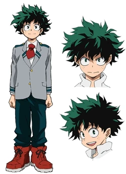

Изуку Мидория
Изуку Мидория (Деку)
- Пол: ♂ Мужской
- Рост: 166 см.
- Возраст: 16
- Группа крови: O
- Родился в: Японии
Изуку Мидория (Midoriya Izuku), также известный, как Деку (Deku) — главный герой манги и аниме «Моя Геройская Академия». Несмотря на то, что он родился без причуды ему удалось привлечь внимание легендарного героя Всемогущего после чего Изуку Мидория стал девятым обладателем причуды «Один За Всех» и получил возможность поступить в академию Юэй на геройский факультет.
Стать клёвым героем... который с улыбкой на лице... справляется со всеми трудностями... Вот она, моя мечта! Вот почему я стараюсь изо всех сил! И остальные... тоже выкладываются на все сто!
Внешность
Изуку — слегка низкорослый для своего возраста парень с округлённым лицом, небольшими симметричными веснушками на обеих щеках, большими зелёными глазами и тёмно-зелёными кудрявыми волосами, торчащими в разные стороны и отбрасывающими заметные тени на самих себя. Все эти характерные черты придают ему весьма неряшливый и в то же время энергичный вид. Изначально он был довольно худым, но после тренировок со Всемогущим приобрёл хорошо развитую мускулатуру.

В период обучения в младшей школе он носил японскую чёрную форму Гакуран с жёлтыми пуговицами. В Юэй он носит стандартную мужскую униформу: светло-серый пиджак поверх белой рубашки и тёмно-зелёные штаны, наряду с красным галстуком, который он не завязывает должным образом. Кроме того, Изуку всегда носит высокие красные ботинки с белой подошвой.
Первый геройский костюм Изуку состоял из светло-зелёного комбинезона с красным ремнём, чёрных налокотников и наколенников, белых перчаток и его фирменных красных ботинок. Также он надевал маску с ушеподобными выступами, напоминающими причёску Всемогущего и респиратор в виде улыбки. Этот костюм был серьёзно повреждён в ходе его тренировочной битвы с Кацуки Бакуго, в результате чего Изуку был вынужден отдать его в ремонт.
Во время Арки Зоны Ненастоящих Катастроф Изуку был одет в спортивную форму Юэй, состоящую из синего спортивного костюма с воротником и белыми полосками, образующими буквы «UA». Кроме того, он носил чёрный респиратор с наколенниками и налокотниками.
Впоследствии геройский костюм Изуку претерпел некоторые изменения, из-за чего стал выглядеть более прочным и боеспособным. Зелёный цвет стал более тёмным, белые вставки на торсе стали тёмно-серыми, наколенники стали значительно длиннее и теперь доходят до бёдер, а его перчатки украшены синими полосами. Его респиратор теперь металлический и имеет восемь небольших отверстий. Также в этом костюме Изуку не надевает свою маску, несмотря на то, что она всё ещё присутствует и теперь напоминает капюшон.
После сражения с Шото пальцы на правой руке слегка деформировались и появились два шрама по обе стороны руки. Его правая рука получила ещё несколько шрамов после боя с Мускулом. После выздоровления Изуку носит компрессионный рукав на правой руке для предотвращения новых травм.
Во время Арки Экзамена на геройскую лицензию костюм Изуку снова был модифицирован чтобы улучшить его боеспособность. Теперь у него есть бронированные железные подошвы, прикреплённые к красным ботинкам Изуку для усиления ударов ног. Помимо подошв, Хатсуме создала для Изуку специальные перчатки поддержки в сочетании с его костюмом для проведения атак на дальних дистанциях.
Личность
Изуку — очень робкий, сдержанный и вежливый парень. В начале повествования из-за издёвок в детстве за то, что родился без Причуды, он выглядит зажатым и невыразительным, особенно на фоне Кацуки. В подростковом возрасте Изуку был объектом для издевательств, главным инициатором которых был Бакуго. Но несмотря на это, он продолжает считать Кацуки своим другом, а после поступления в Юэй и победы над ним в «Пробной битве» он стал увереннее и смелее.
Изуку также отличается прилежностью и сильной волей. Изуку невероятно целеустремлённый. С того момента, как он решил стать героем, записывает в свои блокноты всё, что он узнаёт о Героях и их Причудах, включая учеников Юэй. Он очень заботливый и никогда не бросит кого-то в беде, даже если знает, что недостаточно силён для защиты. Когда у кого-то проблемы, Изуку всегда старается помочь, хотя это не его дело. Часто он делает это по наитию, не сразу осознавая произошедшее.
Изуку имеет привычки долго обдумывать вещи, которые его заинтересовали, и бормотать себе под нос. Героический дух Изуку признан многими, он также заслужил лояльность и благодарность людей, которые ранее были антагонистичны ему, таких как Тенья Иида, Шото Тодороки, Кота Изуми, что привело его к признанию в качестве истинного героя Пятном и Леди Наган.
У Изуку, похоже, есть более дерзкая и грубоватая сторона, которая в основном проявляется во время боя. Эта сторона делает его больше похожим на Бакуго — довольно шумным и непоколебимым, с сильным стремлением к победе. Это происходит потому, что он видит в Кацуки воплощение того, кем должен быть тот, кто стремится к победе. Герой также признал, что ему не очень нравится эта его сторона и он старается держать её под контролем.
Изуку также обладает эмпатической стороной, развив в себе желание понять злодеев, с которыми он столкнулся и потенциально спасти их от самих себя, даже когда все остальные вокруг него думают, что это нереально. Поначалу Томура считал себя сумасшедшим, который просто хочет бессмысленно причинять боль другим, но после того, как узнал о своей трагической истории и почувствовал боль в своём сердце из-за их связи между Одним За Всех и Всеми За Одного, это вновь укрепило его веру в то, что великий герой — это тот, кто спасает других, а не убивает, и из-за этого он захотел узнать, как они стали злодеями, и посмотреть, есть ли какой-нибудь способ предотвратить драку.
После завершения Паранормальной Освободительной войны Изуку резко поменял своё поведение. Страдая от травмы, перенесённой войной и видя, как страдают бесчисленные невинные люди, Изуку становится более холодным и отстранённым по отношению к обществу. Подавляющий стресс и бремя приводят к тому, что он бросается в бой и оставляет позади Всемогущего и других героев, присматривающих за ним, чтобы никто больше не пострадал из-за него. Эта все более активная, серьёзная сторона его характера даже заставила обычных людей заметить, что он не похож на героя.
Причуда
 Один За Всех: причуда Изуку, которую он получил от Всемогущего. Эта причуда даёт ему нечеловеческую силу, ловкость и мобильность путём пропуска силы через своё тело. Благодаря этой причуде Изуку увеличивает свои физические способности (силу, скорость, выносливость и ловкость) до сверхчеловеческого уровня.
Один За Всех: причуда Изуку, которую он получил от Всемогущего. Эта причуда даёт ему нечеловеческую силу, ловкость и мобильность путём пропуска силы через своё тело. Благодаря этой причуде Изуку увеличивает свои физические способности (силу, скорость, выносливость и ловкость) до сверхчеловеческого уровня.